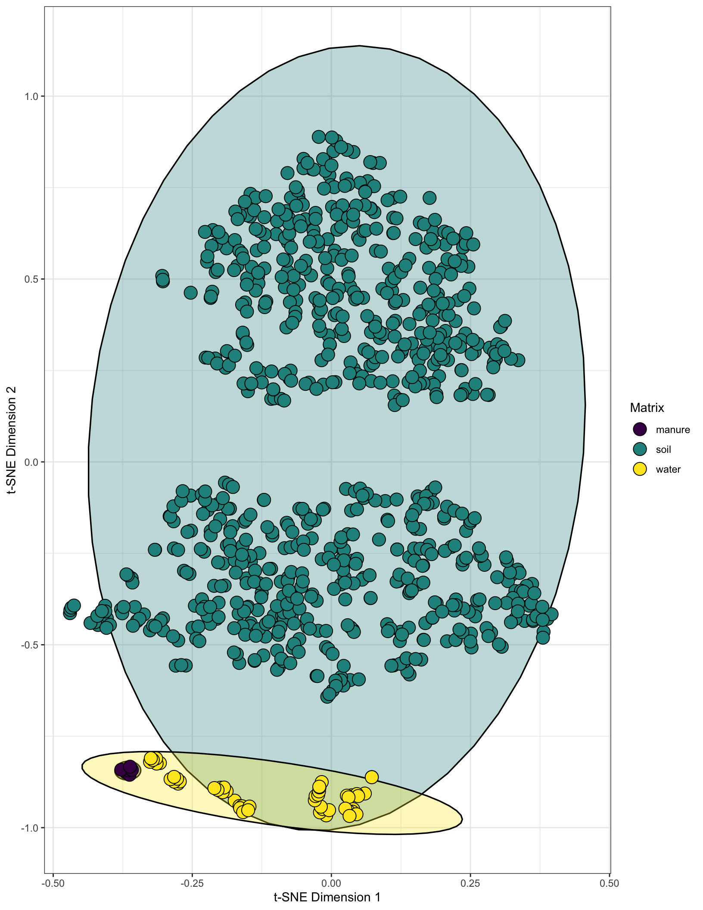
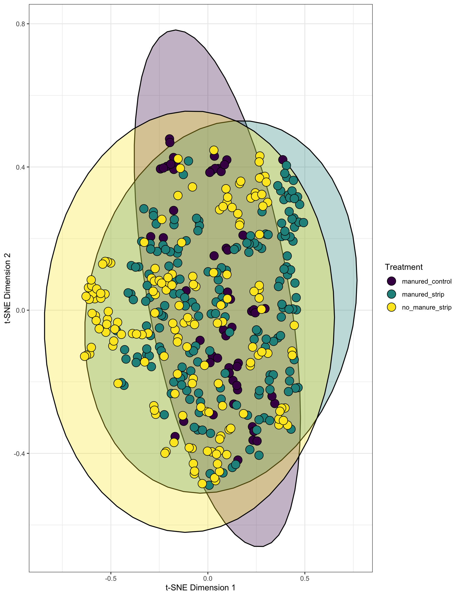
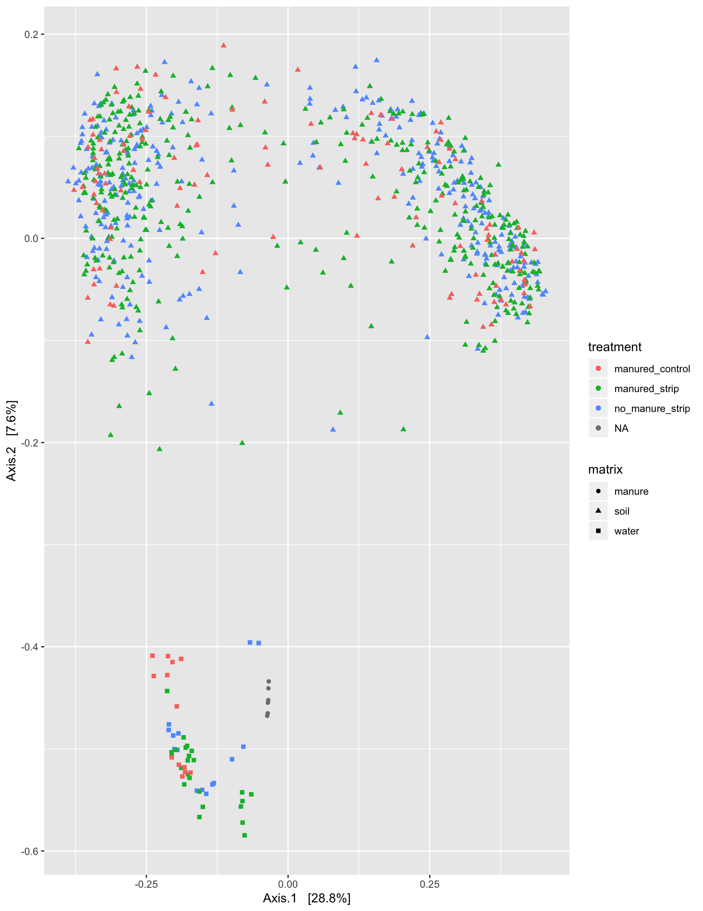

WORLE rainfall simulation ordinations
phy <- readRDS("./data/RDS/worle_with_meta.RDS")TSNE plots
The whole experiment TSNE
by_matrix_tsne <- tsne_phyloseq(phy, treatment = c('matrix'), perplexity = 10, circle = TRUE, colors = 'default') +
scale_fill_viridis(discrete = T, option = "viridis") + ggplot2::theme_bw() +
guides(fill=guide_legend(title="Matrix"))
by_matrix_tsne
We can see that each matrix clusters seperately from each other, with the water and manure being very similar. This is to be expected as the water is runoff from a rainfall simulation performed immediately after the manure was applied.
Removing ASVs observed less than 15 times, DADA2 introduces many singletons which adds “noise” to ordinations making clustering less obvisous than OTU based ordinations.
Just water samples mintax 15
water <- subset_samples(phy, matrix == "water") %>%
filter_taxa(function(x) sum(x) > 15, T)
water_tsne <- tsne_phyloseq(water, treatment = c('treatment'), perplexity = 10, circle = T, colors = 'default') +
scale_fill_viridis(discrete = T, option = "viridis") + ggplot2::theme_bw() +
guides(fill = guide_legend(title = "Treatment"))
water_tsne
Just soil samples, depth 1
soil_depth_1 <- subset_samples(phy, matrix == "soil" & depth == "d1") %>%
filter_taxa(function(x) sum(x) > 15, T)
tsne_soil_depth_1 <- tsne_phyloseq(soil_depth_1, treatment = c('treatment'), perplexity = 10, circle = TRUE, colors = 'default') +
scale_fill_viridis(discrete = T, option = "viridis") + ggplot2::theme_bw() +
guides(fill=guide_legend(title="Treatment"))
tsne_soil_depth_1
Just prairie soil samples, depth 1
only_prairie_samples <- subset_samples(soil_depth_1, in_plot_location %in% c("s6", "s7", "s8", "s9")) %>%
filter_taxa(function(x) sum(x) > 15, T)
only_prairie_samples_tsne <- tsne_phyloseq(only_prairie_samples, treatment = c('treatment'), perplexity = 10, circle = TRUE, colors = 'default') +
scale_fill_viridis(discrete = T, option = "viridis") + ggplot2::theme_bw() +
guides(fill=guide_legend(title="Treatment"))
only_prairie_samples_tsne
Just crop soil samples, depth 1
only_crop_samples <- subset_samples(soil_depth_1, in_plot_location %in% c("s1", "s2", "s3", "s4", "s5")) %>%
filter_taxa(function(x) sum(x) > 15, T)
only_crop_samples_tsne <- tsne_phyloseq(only_crop_samples, treatment = c('treatment'), perplexity = 10, circle = TRUE, colors = 'default') +
scale_fill_viridis(discrete = T, option = "viridis") + ggplot2::theme_bw() +
guides(fill=guide_legend(title="Treatment"))
only_crop_samples_tsne
Depth 2
Just soil samples, depth 2
soil_depth_2 <- subset_samples(phy, matrix == "soil" & depth == "d2") %>%
filter_taxa(function(x) sum(x) > 15, T)
tsne_soil_depth_2 <- tsne_phyloseq(soil_depth_2, treatment = c('treatment'), perplexity = 10, circle = TRUE, colors = 'default') +
scale_fill_viridis(discrete = T, option = "viridis") + ggplot2::theme_bw() +
guides(fill=guide_legend(title="Treatment"))
tsne_soil_depth_2
Just prairie soil samples, depth 2
only_prairie_samples <- subset_samples(soil_depth_2, in_plot_location %in% c("s6", "s7", "s8", "s9")) %>%
filter_taxa(function(x) sum(x) > 15, T)
only_prairie_samples_tsne <- tsne_phyloseq(only_prairie_samples, treatment = c('treatment'), perplexity = 10, circle = TRUE, colors = 'default') +
scale_fill_viridis(discrete = T, option = "viridis") + ggplot2::theme_bw() +
guides(fill=guide_legend(title="Treatment"))
only_prairie_samples_tsne
Facet by day of prairie soil sample, t2 out of order
only_prairie_samples_tsne.f <- tsne_phyloseq(only_prairie_samples, treatment = c('treatment'), perplexity = 10, circle = TRUE, colors = 'default') +
scale_fill_viridis(discrete = T, option = "viridis") + ggplot2::theme_bw() +
guides(fill=guide_legend(title="Treatment")) +
facet_wrap(~day)
only_prairie_samples_tsne.f
Just crop soil samples, depth 2
only_crop_samples <- subset_samples(soil_depth_2, in_plot_location %in% c("s1", "s2", "s3", "s4", "s5")) %>%
filter_taxa(function(x) sum(x) > 15, T)
only_crop_samples_tsne <- tsne_phyloseq(only_crop_samples, treatment = c('treatment'), perplexity = 10, circle = TRUE, colors = 'default') +
scale_fill_viridis(discrete = T, option = "viridis") + ggplot2::theme_bw() +
guides(fill=guide_legend(title="Treatment"))## Scale for 'fill' is already present. Adding another scale for 'fill',
## which will replace the existing scale.only_crop_samples_tsne
PCoA unweighted uni-frac
phy.ord.bray <- ordinate(phy, method = "PCoA", distance = "bray")
plot_ordination(phy, phy.ord.bray, color = "treatment", shape = "matrix")